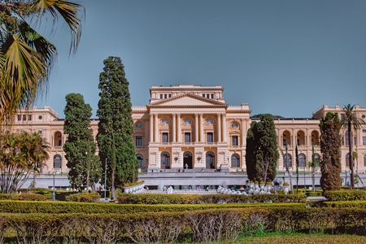
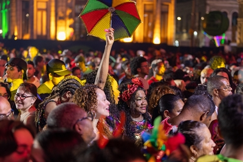

Outros Pontos Turísticos
Conhecendo Recife Antigo!
Além do Marco Zero existe muitos outros pontos turísticos que vale a pena visitar no Recife Antigo. Destacamos alguns deles a seguir.
1. Museu do Sertão
2. Museu do Frevo
3. Rua do Bom Jesus

Além do Marco Zero existe muitos outros pontos turísticos que vale a pena visitar no Recife Antigo. Destacamos alguns deles a seguir.